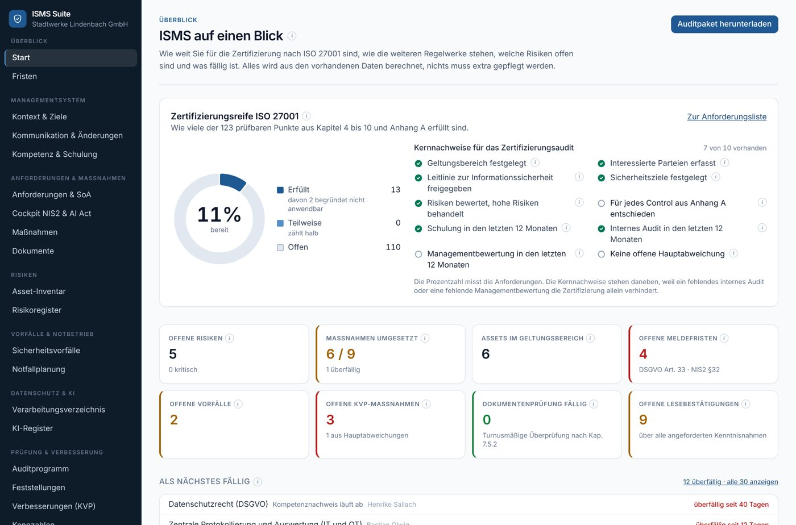

Cybersicherheit für den Mittelstand
Ein kostenloser Cyber-Check, eine kostenlose ISMS-Suite und Beratung zu ISO 27001, NIS2 und externem CISO. Für Entscheider in kleinen und mittleren Unternehmen, vor Ort in München und Umgebung, bundesweit per Video.
Wie sicher ist Ihr Unternehmen?27 Fragen · 5 Minuten · kostenlos und anonym Cyber-Check starten Oder die ISMS-Suite kostenlos nutzenISO/IEC 27001 Implementer · ISO/IEC 27005 Risk Manager · Jahrelange Erfahrung in Bank, Behörden und Industrie
Wie sicher ist Ihr Unternehmen?
Der kostenlose Cyber Security Check: 27 Fragen in sechs Themenfeldern. Das Ergebnis sehen Sie sofort, nur hier in Ihrem Browser.
Ihr Ergebnis sehen Sie sofort im Anschluss, ohne Kontaktdaten anzugeben. Der Check ist eine erste Selbsteinschätzung und ersetzt keine Prüfung vor Ort.
Beratung zu Cybersicherheit und Risiken
Von der ersten Analyse bis zum Zertifikat, vor Ort in München und Umgebung, bundesweit per Video.
ISMS und Zertifizierung
Ein schlankes Managementsystem nach ISO 27001 oder BSI IT-Grundschutz, das im Alltag gepflegt wird und im Audit besteht. NIS2-Pflichten nehmen wir bei Bedarf gleich mit.
Externer CISO und ISB
Ich übernehme als externer CISO oder Informationssicherheitsbeauftragter (ISB) die Leitung Ihrer Informationssicherheit, für eine Übergangszeit oder dauerhaft. Abgerechnet wird über einen monatlichen Festpreis.
Sicherheitsanalysen
Ich finde heraus, wo Ihr Unternehmen angreifbar ist, und sage Ihnen, was zuerst kommt. Für Kleinbetriebe auch nach DIN SPEC 27076.
Notfall- und Krisenmanagement
Was passiert, wenn morgen alle Rechner verschlüsselt sind? Ein kurzer Notfallplan und eine Übung sorgen dafür, dass im Ernstfall jeder weiß, was zu tun ist.
Security Awareness
Online-Schulungen und Phishing-Simulationen zeigen Ihren Mitarbeitenden, woran man Angriffe erkennt. Die Auswertungen zeigen Ihnen, wo nachgeschult werden sollte.
Die ISMS-Suite: kostenlos für Ihr Unternehmen
Die ISMS-Suite ist meine Software für Informationssicherheit, die Sie selbst nutzen können. Ohne Lizenzgebühr, ohne Abo und ohne dass Sie mich dafür buchen müssen.
- Zeigt auf einen Blick, wie weit Sie für ISO 27001 sind
- Risiken, Maßnahmen, Vorfälle, Notfallplanung und Audits an einem Ort
- Eine Maßnahme zählt für ISO 27001, NIS2, DSGVO und BSI IT-Grundschutz zugleich
- Läuft auf Ihrem eigenen Server, Ihre Daten bleiben bei Ihnen

Häufige Fragen
Was prüft der kostenlose Cyber-Check?
27 Fragen in sechs Themenfeldern: Organisation, Zugänge, Datensicherung, Updates, Schutz vor Schadsoftware sowie Systeme und Netzwerke. Grundlage ist ein Prüfverfahren für kleine Unternehmen, das das Bundesamt für Sicherheit in der Informationstechnik (BSI) mit Partnern entwickelt hat. Am Ende sehen Sie sofort, wo Ihr Unternehmen steht und welche Lücken Sie zuerst schließen sollten.
Wobei unterstützen Sie Unternehmen?
Bei allen Fragen zu Cybersicherheit und Risiken: Sicherheitsanalysen, Security Awareness mit Online-Schulungen und Phishing-Simulationen, Notfall- und Krisenmanagement, Aufbau eines ISMS nach ISO 27001 oder BSI IT-Grundschutz sowie Leitung der Informationssicherheit als externer CISO oder Informationssicherheitsbeauftragter (ISB). Fällt Ihr Unternehmen unter NIS2, gehören auch dessen Pflichten dazu.
Was kostet die Beratung?
Der Cyber-Check, das 30-minütige Erstgespräch und die ISMS-Suite sind kostenlos. Für Beratungsprojekte erstelle ich Ihnen nach dem Erstgespräch ein individuelles Angebot. Den externen CISO oder Informationssicherheitsbeauftragten gibt es zum monatlichen Festpreis.
Kann ich die ISMS-Suite ohne Beratung nutzen?
Ja. Die ISMS-Suite ist kostenlos, der Quellcode liegt offen auf GitHub, und sie läuft mit Docker auf Ihrem eigenen Rechner oder Server. Eine Beratung ist dafür nicht nötig. Wer Unterstützung bei der Einführung möchte, kann sie dazubuchen.
Arbeiten Sie nur in München?
Nein. Vor Ort bin ich in München und Umgebung. Unternehmen in ganz Deutschland berate ich per Video, Termine vor Ort sind nach Absprache möglich.
Betrifft NIS2 mein Unternehmen?
Seit dem 6. Dezember 2025 gilt in Deutschland das neue BSI-Gesetz zur Umsetzung von NIS2. Betroffen sind in der Regel Unternehmen ab 50 Mitarbeitenden oder mehr als 10 Millionen Euro Jahresumsatz in bestimmten Branchen. Kleinere Betriebe spüren die Anforderungen oft als Lieferant ihrer Kunden.
Was passiert mit meinen Antworten im Check?
Die Auswertung läuft vollständig in Ihrem Browser. Es wird nichts übertragen, solange Sie nicht selbst das Anfrageformular absenden.
Lassen Sie uns sprechen
30 Minuten, kostenlos und unverbindlich. Sie erzählen mir, was Sie beschäftigt, ich sage Ihnen ehrlich, ob und wie ich helfen kann.
- E-Mailkontakt@ihre-domain.de
- StandortVor Ort in München und Umgebung, bundesweit per Video